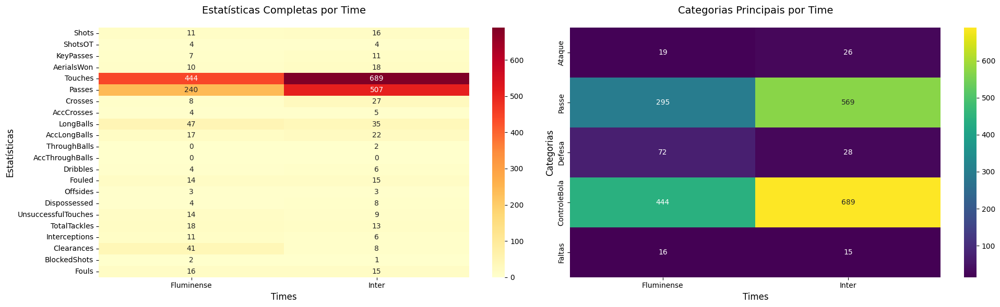
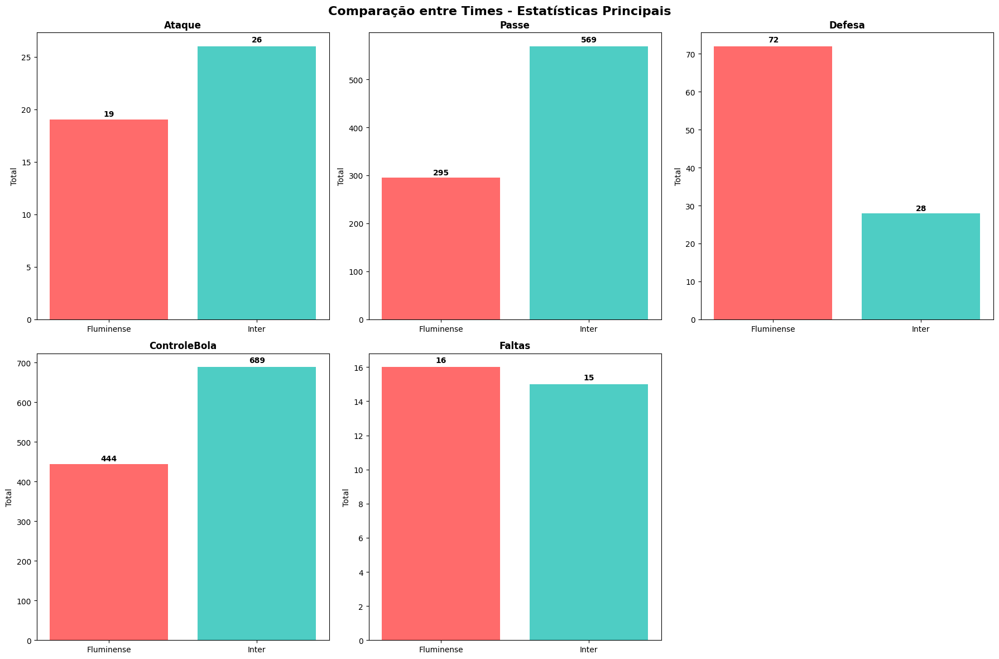
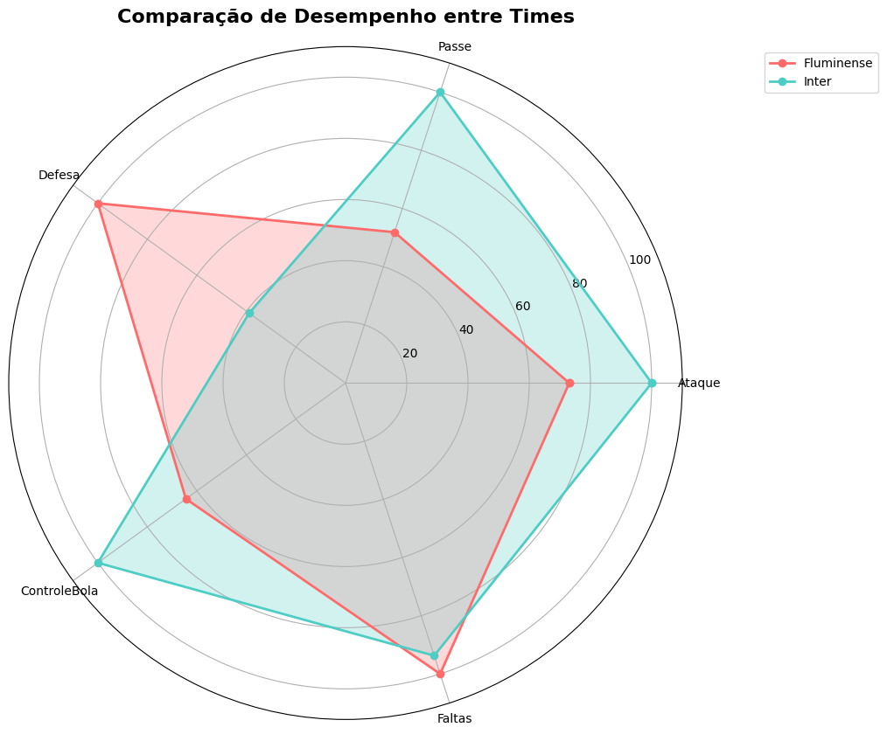

Análise de Correspondência - Consolidação de Estatísticas de Futebol
Este notebook consolida todas as estatísticas de jogadores e times para preparar dados para análise de correspondência.
Objetivos:
Consolidar estatísticas por jogador (removendo duplicatas)
Agregar estatísticas por time
Criar tabela fato para análise de correspondência
Exportar todas as tabelas como CSV
import pandas as pdimport numpy as npimport matplotlib.pyplot as pltimport seaborn as snsfrom pathlib import Pathimport warningswarnings.filterwarnings('ignore')# Configurações de exibiçãopd.set_option('display.max_columns', None)pd.set_option('display.width', None)pd.set_option('display.max_rows', 20)print("Bibliotecas carregadas com sucesso!")
Bibliotecas carregadas com sucesso!
1. Carregamento e Análise dos Dados
Primeiro vamos carregar todas as tabelas e analisar sua estrutura.
# Carregando todos os datasetssumario = pd.read_csv('sumario_jogo.csv')passing = pd.read_csv('players_passing_stats.csv')offensive = pd.read_csv('players_offensive_stats.csv')defensive = pd.read_csv('players_defensive_stats.csv')# Informações básicas dos datasetsdatasets = {'Sumário do Jogo': sumario,'Estatísticas de Passe': passing,'Estatísticas Ofensivas': offensive,'Estatísticas Defensivas': defensive}print("=== INFORMAÇÕES DOS DATASETS ===")for nome, df in datasets.items():print(f"\n{nome}:")print(f" - Dimensões: {df.shape}")print(f" - Jogadores únicos: {df['Player'].nunique()}")print(f" - Times: {df['Team'].unique()}")
# Analisando colunas de cada datasetprint("=== COLUNAS POR DATASET ===")for nome, df in datasets.items():print(f"\n{nome}:")print(f" Colunas: {list(df.columns)}")
Vamos identificar quais colunas aparecem em múltiplos datasets.
# Identificando colunas comuns entre datasetsall_columns = {}for nome, df in datasets.items(): all_columns[nome] =set(df.columns)# Colunas que aparecem em múltiplos datasetscolunas_duplicadas = {}for col in sumario.columns: datasets_com_coluna = []for nome, colunas in all_columns.items():if col in colunas: datasets_com_coluna.append(nome)iflen(datasets_com_coluna) >1: colunas_duplicadas[col] = datasets_com_colunaprint("=== COLUNAS DUPLICADAS ===")for col, datasets_list in colunas_duplicadas.items():print(f"{col}: {datasets_list}")
=== COLUNAS DUPLICADAS ===
Player: ['Sumário do Jogo', 'Estatísticas de Passe', 'Estatísticas Ofensivas', 'Estatísticas Defensivas']
Age: ['Sumário do Jogo', 'Estatísticas de Passe', 'Estatísticas Ofensivas', 'Estatísticas Defensivas']
Position: ['Sumário do Jogo', 'Estatísticas de Passe', 'Estatísticas Ofensivas', 'Estatísticas Defensivas']
Shots: ['Sumário do Jogo', 'Estatísticas Ofensivas']
ShotsOT: ['Sumário do Jogo', 'Estatísticas Ofensivas']
KeyPasses: ['Sumário do Jogo', 'Estatísticas de Passe', 'Estatísticas Ofensivas']
PA%: ['Sumário do Jogo', 'Estatísticas de Passe']
Rating: ['Sumário do Jogo', 'Estatísticas de Passe', 'Estatísticas Ofensivas', 'Estatísticas Defensivas']
Team: ['Sumário do Jogo', 'Estatísticas de Passe', 'Estatísticas Ofensivas', 'Estatísticas Defensivas']
# Verificando se os valores das colunas duplicadas são consistentesprint("=== VERIFICAÇÃO DE CONSISTÊNCIA ===")# Verificando KeyPasses (aparece em sumario, passing e offensive)if'KeyPasses'in colunas_duplicadas:print("\nVerificando KeyPasses:")# Merge para comparar temp_merge = sumario[['Player', 'KeyPasses']].merge( passing[['Player', 'KeyPasses']], on='Player', suffixes=('_sumario', '_passing') ) temp_merge = temp_merge.merge( offensive[['Player', 'KeyPasses']], on='Player' ) temp_merge.rename( columns={'KeyPasses': 'KeyPasses_offensive'}, inplace=True)# Verificando diferenças diff1 = (temp_merge['KeyPasses_sumario'] != temp_merge['KeyPasses_passing']).sum() diff2 = (temp_merge['KeyPasses_sumario'] != temp_merge['KeyPasses_offensive']).sum()print(f" Diferenças sumario vs passing: {diff1}")print(f" Diferenças sumario vs offensive: {diff2}")if diff1 ==0and diff2 ==0:print(" ✓ KeyPasses é consistente entre todos os datasets")else:print(" ⚠ KeyPasses tem diferenças entre datasets")
=== VERIFICAÇÃO DE CONSISTÊNCIA ===
Verificando KeyPasses:
Diferenças sumario vs passing: 0
Diferenças sumario vs offensive: 0
✓ KeyPasses é consistente entre todos os datasets
3. Consolidação da Tabela de Jogadores
Vamos consolidar todas as estatísticas em uma única tabela por jogador, removendo duplicatas.
# Definindo colunas de identificação que devem ser mantidas apenas uma vezcolunas_identificacao = ['Player', 'Age', 'Position', 'Team', 'Rating']# Começando com o sumário como baseestatisticas_jogadores = sumario.copy()print("=== PROCESSO DE CONSOLIDAÇÃO ===")print(f"Base inicial (sumário): {estatisticas_jogadores.shape}")# Adicionando colunas únicas de passingcolunas_passing_unicas = [col for col in passing.columnsif col notin estatisticas_jogadores.columns or col =='Player']iflen(colunas_passing_unicas) >1: # Mais que apenas 'Player' passing_unicas = passing[colunas_passing_unicas] estatisticas_jogadores = estatisticas_jogadores.merge( passing_unicas, on='Player', how='left' )print(f"Após adicionar passing: {estatisticas_jogadores.shape}")print(f"Colunas adicionadas de passing: {[col for col in colunas_passing_unicas if col !='Player']}")# Adicionando colunas únicas de offensivecolunas_offensive_unicas = [col for col in offensive.columnsif col notin estatisticas_jogadores.columns or col =='Player']iflen(colunas_offensive_unicas) >1: offensive_unicas = offensive[colunas_offensive_unicas] estatisticas_jogadores = estatisticas_jogadores.merge( offensive_unicas, on='Player', how='left' )print(f"Após adicionar offensive: {estatisticas_jogadores.shape}")print(f"Colunas adicionadas de offensive: {[col for col in colunas_offensive_unicas if col !='Player']}")# Adicionando colunas únicas de defensivecolunas_defensive_unicas = [col for col in defensive.columnsif col notin estatisticas_jogadores.columns or col =='Player']iflen(colunas_defensive_unicas) >1: defensive_unicas = defensive[colunas_defensive_unicas] estatisticas_jogadores = estatisticas_jogadores.merge( defensive_unicas, on='Player', how='left' )print(f"Após adicionar defensive: {estatisticas_jogadores.shape}")print(f"Colunas adicionadas de defensive: {[col for col in colunas_defensive_unicas if col !='Player']}")print(f"\nTabela consolidada final: {estatisticas_jogadores.shape}")
=== PROCESSO DE CONSOLIDAÇÃO ===
Base inicial (sumário): (31, 11)
Após adicionar passing: (31, 18)
Colunas adicionadas de passing: ['Passes', 'Crosses', 'AccCrosses', 'LongBalls', 'AccLongBalls', 'ThroughBalls', 'AccThroughBalls']
Após adicionar offensive: (31, 23)
Colunas adicionadas de offensive: ['Dribbles', 'Fouled', 'Offsides', 'Dispossessed', 'UnsuccessfulTouches']
Após adicionar defensive: (31, 28)
Colunas adicionadas de defensive: ['TotalTackles', 'Interceptions', 'Clearances', 'BlockedShots', 'Fouls']
Tabela consolidada final: (31, 28)
# Visualizando a tabela consolidadaprint("=== TABELA CONSOLIDADA DE JOGADORES ===")print(f"Colunas finais ({len(estatisticas_jogadores.columns)}):")for i, col inenumerate(estatisticas_jogadores.columns, 1):print(f"{i:2d}. {col}")print(f"\nPrimeiras 3 linhas:")print(estatisticas_jogadores.head(3))
# Salvando tabela consolidada de jogadoresestatisticas_jogadores.to_csv('estatisticas_jogadores_consolidada.csv', index=False)print("✓ Tabela consolidada de jogadores salva como 'estatisticas_jogadores_consolidada.csv'")# Verificando valores faltantesprint(f"\nValores faltantes por coluna:")missing_values = estatisticas_jogadores.isnull().sum()if missing_values.sum() >0:print(missing_values[missing_values >0])else:print("Nenhum valor faltante encontrado!")
✓ Tabela consolidada de jogadores salva como 'estatisticas_jogadores_consolidada.csv'
Valores faltantes por coluna:
Nenhum valor faltante encontrado!
4. Agregação por Time
Agora vamos criar estatísticas agregadas por time.
# Identificando colunas numéricas para agregaçãocolunas_numericas = estatisticas_jogadores.select_dtypes( include=[np.number]).columns.tolist()# Colunas que precisam de tratamento especialcolunas_especiais = {'Age': 'mean', # Idade média'Rating': 'mean', # Rating médio'PA%': 'mean'# Porcentagem de passes média}# Colunas para somar (estatísticas de jogo)colunas_soma = [ col for col in colunas_numericas if col notin colunas_especiais.keys()]print("=== ESTRATÉGIA DE AGREGAÇÃO ===")print(f"Colunas para média: {list(colunas_especiais.keys())}")print(f"Colunas para soma: {colunas_soma}")
# Criando agregações por timeagregacoes = {'Player': 'count', # Número de jogadores}# Adicionando agregações especiaisagregacoes.update(colunas_especiais)# Adicionando somasfor col in colunas_soma: agregacoes[col] ='sum'# Aplicando agregaçõesestatisticas_times = estatisticas_jogadores.groupby('Team').agg(agregacoes).round(2)# Renomeando colunas para clarezaestatisticas_times.rename(columns={'Player': 'NumJogadores','Age': 'IdadeMedia','Rating': 'RatingMedio'}, inplace=True)print("=== ESTATÍSTICAS POR TIME ===")print(f"Dimensões: {estatisticas_times.shape}")print(f"\nTabela de estatísticas por time:")print(estatisticas_times)
=== ESTATÍSTICAS POR TIME ===
Dimensões: (2, 26)
Tabela de estatísticas por time:
NumJogadores IdadeMedia RatingMedio PA% Shots ShotsOT \
Team
Fluminense 15 30.67 6.92 63.36 11 4
Inter 16 27.44 6.24 86.02 16 4
KeyPasses AerialsWon Touches Passes Crosses AccCrosses \
Team
Fluminense 7 10 444 240 8 4
Inter 11 18 689 507 27 5
LongBalls AccLongBalls ThroughBalls AccThroughBalls Dribbles \
Team
Fluminense 47 17 0 0 4
Inter 35 22 2 0 6
Fouled Offsides Dispossessed UnsuccessfulTouches TotalTackles \
Team
Fluminense 14 3 4 14 18
Inter 15 3 8 9 13
Interceptions Clearances BlockedShots Fouls
Team
Fluminense 11 41 2 16
Inter 6 8 1 15
# Salvando estatísticas por timeestatisticas_times.to_csv('estatisticas_times_agregadas.csv')print("✓ Estatísticas por time salvas como 'estatisticas_times_agregadas.csv'")# Estatísticas descritivasprint(f"\nEstatísticas descritivas:")print(estatisticas_times.describe())
5. Criação da Tabela Fato para Análise de Correspondência
Vamos criar diferentes versões da tabela fato para análise de correspondência.
# Versão 1: Tabela fato completa (todas as estatísticas numéricas)tabela_fato_completa = estatisticas_times.copy()# Removendo colunas não adequadas para análise de correspondênciacolunas_remover = ['NumJogadores', 'IdadeMedia', 'RatingMedio']if'PA%'in tabela_fato_completa.columns: colunas_remover.append('PA%')tabela_fato_completa = tabela_fato_completa.drop(columns=[col for col in colunas_removerif col in tabela_fato_completa.columns])print("=== TABELA FATO COMPLETA ===")print(f"Dimensões: {tabela_fato_completa.shape}")print(f"Estatísticas incluídas: {list(tabela_fato_completa.columns)}")print(f"\nTabela fato completa:")print(tabela_fato_completa)
=== TABELA FATO COMPLETA ===
Dimensões: (2, 22)
Estatísticas incluídas: ['Shots', 'ShotsOT', 'KeyPasses', 'AerialsWon', 'Touches', 'Passes', 'Crosses', 'AccCrosses', 'LongBalls', 'AccLongBalls', 'ThroughBalls', 'AccThroughBalls', 'Dribbles', 'Fouled', 'Offsides', 'Dispossessed', 'UnsuccessfulTouches', 'TotalTackles', 'Interceptions', 'Clearances', 'BlockedShots', 'Fouls']
Tabela fato completa:
Shots ShotsOT KeyPasses AerialsWon Touches Passes Crosses \
Team
Fluminense 11 4 7 10 444 240 8
Inter 16 4 11 18 689 507 27
AccCrosses LongBalls AccLongBalls ThroughBalls \
Team
Fluminense 4 47 17 0
Inter 5 35 22 2
AccThroughBalls Dribbles Fouled Offsides Dispossessed \
Team
Fluminense 0 4 14 3 4
Inter 0 6 15 3 8
UnsuccessfulTouches TotalTackles Interceptions Clearances \
Team
Fluminense 14 18 11 41
Inter 9 13 6 8
BlockedShots Fouls
Team
Fluminense 2 16
Inter 1 15
# Versão 2: Tabela fato simplificada (categorias principais)print("=== CRIANDO TABELA FATO SIMPLIFICADA ===")# Definindo categorias principaiscategorias = {}# Estatísticas ofensivasifall(col in tabela_fato_completa.columns for col in ['Shots', 'ShotsOT', 'Dribbles']): categorias['Ataque'] = tabela_fato_completa['Shots'] +\ tabela_fato_completa['ShotsOT'] + tabela_fato_completa['Dribbles']# Estatísticas de passeifall(col in tabela_fato_completa.columns for col in ['Passes', 'Crosses', 'LongBalls']): categorias['Passe'] = tabela_fato_completa['Passes'] +\ tabela_fato_completa['Crosses'] + tabela_fato_completa['LongBalls']# Estatísticas defensivascolunas_defesa = ['TotalTackles','Interceptions', 'Clearances', 'BlockedShots']colunas_defesa_disponiveis = [ col for col in colunas_defesa if col in tabela_fato_completa.columns]if colunas_defesa_disponiveis: categorias['Defesa'] = tabela_fato_completa[colunas_defesa_disponiveis].sum( axis=1)# Controle de jogoif'Touches'in tabela_fato_completa.columns: categorias['ControleBola'] = tabela_fato_completa['Touches']# Disciplinaif'Fouls'in tabela_fato_completa.columns: categorias['Faltas'] = tabela_fato_completa['Fouls']# Criando tabela simplificadatabela_fato_simplificada = pd.DataFrame( categorias, index=tabela_fato_completa.index)print(f"Categorias criadas: {list(categorias.keys())}")print(f"\nTabela fato simplificada:")print(tabela_fato_simplificada)
=== CRIANDO TABELA FATO SIMPLIFICADA ===
Categorias criadas: ['Ataque', 'Passe', 'Defesa', 'ControleBola', 'Faltas']
Tabela fato simplificada:
Ataque Passe Defesa ControleBola Faltas
Team
Fluminense 19 295 72 444 16
Inter 26 569 28 689 15
# Salvando as tabelas fatotabela_fato_completa.to_csv('tabela_fato_correspondencia_completa.csv')tabela_fato_simplificada.to_csv('tabela_fato_correspondencia_simplificada.csv')print("✓ Tabela fato completa salva como 'tabela_fato_correspondencia_completa.csv'")print("✓ Tabela fato simplificada salva como 'tabela_fato_correspondencia_simplificada.csv'")
✓ Tabela fato completa salva como 'tabela_fato_correspondencia_completa.csv'
✓ Tabela fato simplificada salva como 'tabela_fato_correspondencia_simplificada.csv'
6. Visualizações Exploratórias
Vamos criar algumas visualizações para entender melhor os dados.
# Configuração de visualizaçãoplt.style.use('default')plt.rcParams['figure.figsize'] = (12, 8)# Heatmap da tabela fato completafig, (ax1, ax2) = plt.subplots(1, 2, figsize=(20, 6))# Heatmap completasns.heatmap(tabela_fato_completa.T, annot=True, cmap='YlOrRd', fmt='.0f', ax=ax1)ax1.set_title('Estatísticas Completas por Time', fontsize=14, pad=20)ax1.set_xlabel('Times', fontsize=12)ax1.set_ylabel('Estatísticas', fontsize=12)# Heatmap simplificadasns.heatmap(tabela_fato_simplificada.T, annot=True, cmap='viridis', fmt='.0f', ax=ax2)ax2.set_title('Categorias Principais por Time', fontsize=14, pad=20)ax2.set_xlabel('Times', fontsize=12)ax2.set_ylabel('Categorias', fontsize=12)plt.tight_layout()plt.show()

# Comparação entre times - categorias principaisfig, axes = plt.subplots(2, 3, figsize=(18, 12))axes = axes.flatten()cores = ['#FF6B6B', '#4ECDC4'] # Cores para os timesfor i, categoria inenumerate(tabela_fato_simplificada.columns):if i <len(axes): valores = tabela_fato_simplificada[categoria] ax = axes[i] bars = ax.bar(valores.index, valores.values, color=cores[:len(valores)]) ax.set_title(f'{categoria}', fontsize=12, fontweight='bold') ax.set_ylabel('Total', fontsize=10)# Adicionando valores nas barrasfor bar, valor inzip(bars, valores.values): height = bar.get_height() ax.text(bar.get_x() + bar.get_width()/2., height + height*0.01,f'{int(valor)}', ha='center', va='bottom', fontweight='bold')# Removendo eixos não utilizadosfor i inrange(len(tabela_fato_simplificada.columns), len(axes)): axes[i].remove()plt.suptitle('Comparação entre Times - Estatísticas Principais', fontsize=16, fontweight='bold', y=0.98)plt.tight_layout()plt.show()

7. Análise Comparativa entre Times
Vamos fazer uma análise comparativa detalhada entre os times.
# Análise comparativa detalhadaprint("=== ANÁLISE COMPARATIVA ENTRE TIMES ===")times = tabela_fato_simplificada.index.tolist()print(f"Times analisados: {times}")# Calculando diferenças percentuaisiflen(times) ==2: time1, time2 = times[0], times[1]print(f"\n{time1} vs {time2}:")print("-"*50)for categoria in tabela_fato_simplificada.columns: val1 = tabela_fato_simplificada.loc[time1, categoria] val2 = tabela_fato_simplificada.loc[time2, categoria]if val2 !=0: diff_perc = ((val1 - val2) / val2) *100 maior = time1 if val1 > val2 else time2print(f"{categoria:15s}: {time1}{val1:6.0f} | {time2}{val2:6.0f} | Vantagem: {maior} ({abs(diff_perc):5.1f}%)")else:print(f"{categoria:15s}: {time1}{val1:6.0f} | {time2}{val2:6.0f} | Sem comparação possível")
=== ANÁLISE COMPARATIVA ENTRE TIMES ===
Times analisados: ['Fluminense', 'Inter']
Fluminense vs Inter:
--------------------------------------------------
Ataque : Fluminense 19 | Inter 26 | Vantagem: Inter ( 26.9%)
Passe : Fluminense 295 | Inter 569 | Vantagem: Inter ( 48.2%)
Defesa : Fluminense 72 | Inter 28 | Vantagem: Fluminense (157.1%)
ControleBola : Fluminense 444 | Inter 689 | Vantagem: Inter ( 35.6%)
Faltas : Fluminense 16 | Inter 15 | Vantagem: Fluminense ( 6.7%)
# Criando um radar chart para comparação visualimport matplotlib.pyplot as pltimport numpy as npdef criar_radar_chart(dados, times, titulo):# Número de variáveis num_vars =len(dados.columns)# Ângulos para cada eixo angles = np.linspace(0, 2* np.pi, num_vars, endpoint=False).tolist() angles += angles[:1] # Completar o círculo# Criar figura fig, ax = plt.subplots( figsize=(10, 10), subplot_kw=dict(projection='polar'))# Cores para cada time cores = ['#FF6B6B', '#4ECDC4', '#45B7D1', '#96CEB4']# Plotar dados para cada timefor i, time inenumerate(times): valores = dados.loc[time].tolist() valores += valores[:1] # Completar o círculo ax.plot(angles, valores, 'o-', linewidth=2, label=time, color=cores[i]) ax.fill(angles, valores, alpha=0.25, color=cores[i])# Configurar eixos ax.set_xticks(angles[:-1]) ax.set_xticklabels(dados.columns) ax.set_ylim(0, dados.values.max() *1.1)# Adicionar título e legenda plt.title(titulo, size=16, fontweight='bold', pad=20) plt.legend(loc='upper right', bbox_to_anchor=(1.3, 1.0))return fig# Normalizar dados para o radar chart (0-100)dados_normalizados = tabela_fato_simplificada.copy()for col in dados_normalizados.columns: max_val = dados_normalizados[col].max()if max_val >0: dados_normalizados[col] = (dados_normalizados[col] / max_val) *100# Criar radar chartiflen(times) >0: fig = criar_radar_chart(dados_normalizados, times,'Comparação de Desempenho entre Times') plt.show()

8. Resumo e Arquivos Gerados
Vamos fazer um resumo final e listar todos os arquivos gerados.
# Verificando arquivos geradosimport osarquivos_gerados = ['estatisticas_jogadores_consolidada.csv','estatisticas_times_agregadas.csv','tabela_fato_correspondencia_completa.csv','tabela_fato_correspondencia_simplificada.csv']print("=== RESUMO DOS ARQUIVOS GERADOS ===")print()for arquivo in arquivos_gerados:if os.path.exists(arquivo):# Carregar para mostrar dimensões df = pd.read_csv(arquivo)print(f"✓ {arquivo}")print(f" Dimensões: {df.shape}")print(f" Colunas: {df.shape[1]}")print()else:print(f"✗ {arquivo} - NÃO ENCONTRADO")print()
# Resumo final das análisesprint("=== RESUMO FINAL ===")print()print("1. CONSOLIDAÇÃO DE DADOS:")print(f" • {len(datasets)} datasets originais consolidados")print(f" • {len(colunas_duplicadas)} colunas duplicadas identificadas e tratadas")print(f" • {estatisticas_jogadores.shape[0]} jogadores consolidados")print(f" • {estatisticas_jogadores.shape[1]} estatísticas por jogador")print()print("2. AGREGAÇÃO POR TIME:")print(f" • {len(times)} times analisados")print(f" • {tabela_fato_completa.shape[1]} estatísticas agregadas (versão completa)")print(f" • {tabela_fato_simplificada.shape[1]} categorias principais (versão simplificada)")print()print("3. TABELAS PARA ANÁLISE DE CORRESPONDÊNCIA:")print(" • Tabela completa: matriz times x todas as estatísticas")print(" • Tabela simplificada: matriz times x categorias principais")print(" • Ambas prontas para análise de correspondência")print()print("4. PRÓXIMOS PASSOS RECOMENDADOS:")print(" • Use 'tabela_fato_correspondencia_simplificada.csv' para análise inicial")print(" • Use 'tabela_fato_correspondencia_completa.csv' para análise detalhada")print(" • Aplique técnicas de análise de correspondência (CA)")print(" • Interprete os resultados considerando o contexto do jogo")
=== RESUMO FINAL ===
1. CONSOLIDAÇÃO DE DADOS:
• 4 datasets originais consolidados
• 9 colunas duplicadas identificadas e tratadas
• 31 jogadores consolidados
• 28 estatísticas por jogador
2. AGREGAÇÃO POR TIME:
• 2 times analisados
• 22 estatísticas agregadas (versão completa)
• 5 categorias principais (versão simplificada)
3. TABELAS PARA ANÁLISE DE CORRESPONDÊNCIA:
• Tabela completa: matriz times x todas as estatísticas
• Tabela simplificada: matriz times x categorias principais
• Ambas prontas para análise de correspondência
4. PRÓXIMOS PASSOS RECOMENDADOS:
• Use 'tabela_fato_correspondencia_simplificada.csv' para análise inicial
• Use 'tabela_fato_correspondencia_completa.csv' para análise detalhada
• Aplique técnicas de análise de correspondência (CA)
• Interprete os resultados considerando o contexto do jogo
Conclusão
O processo de consolidação foi concluído com sucesso!
Arquivos Gerados:
estatisticas_jogadores_consolidada.csv - Todas as estatísticas por jogador (sem duplicatas)
estatisticas_times_agregadas.csv - Estatísticas agregadas por time
tabela_fato_correspondencia_completa.csv - Matriz completa para análise de correspondência
tabela_fato_correspondencia_simplificada.csv - Matriz simplificada com categorias principais
Para Análise de Correspondência:
Linhas: Times (Inter, Fluminense)
Colunas: Estatísticas/Categorias de jogo
Valores: Totais agregados por time
As tabelas estão prontas para análise de correspondência usando bibliotecas como prince, sklearn ou ca em R.